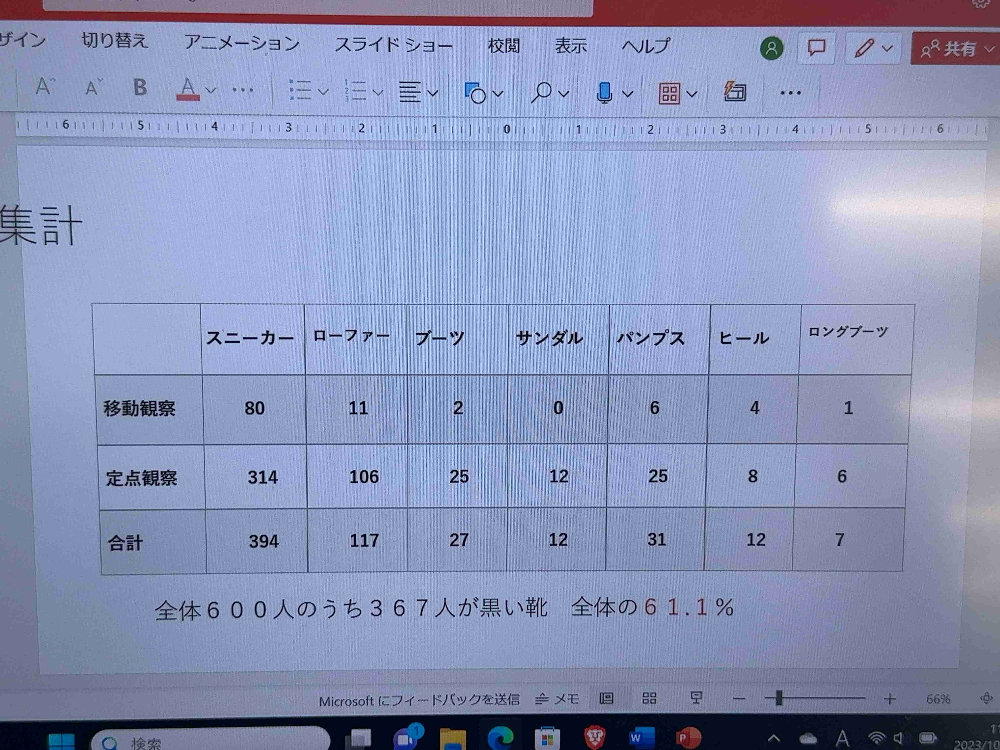
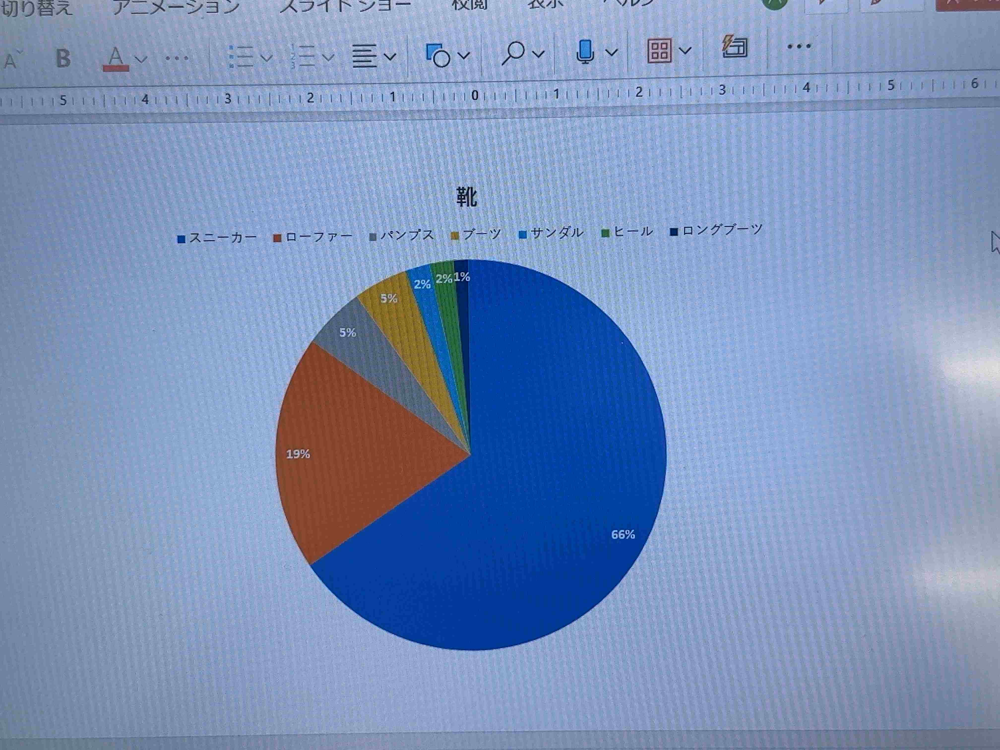

できなかったが、できなかったが、
第三回課題
第三回課題
観察内容
街中を歩いている人の靴の種類
観察場所
移動→みなとみらい円形広場までの道のり
定点→みなとみらい円形公園
観察結果


スニーカーが66％で非常に高いことが分かった。
サンダルをはいている人のうち1.2人を除いてみんな靴下をはいていた。
振り返り
結果の通り非常に多くの人がスニーカーをはいており年齢や性別、予想される職種にかかわらずスニーカーをはいてる事が分かった。
オフィス街が近くにあり社会人が多くローファーが多いのではないのかと事前に予想していたが、結果は600人中117人、割合としては19％であり特別高い結果ではなかった。
理由としては平日昼間であること、ワールドポーターズやコスモワールドが近く会社員があまり来ない場所であったからであると考える。
サンダルをはいている人の多くが靴下をはいていたこと、多くの場合ブーツの生地が薄かったことなどから、熱くもないが寒くもない現在の季節感を感じられた。